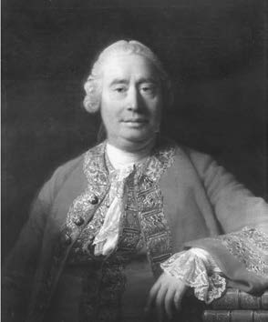
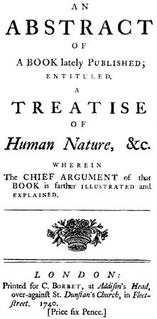
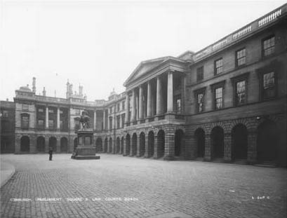
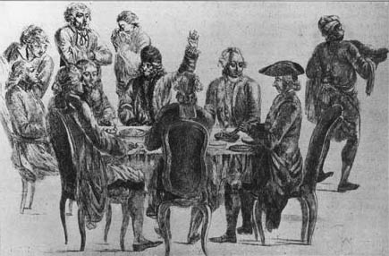
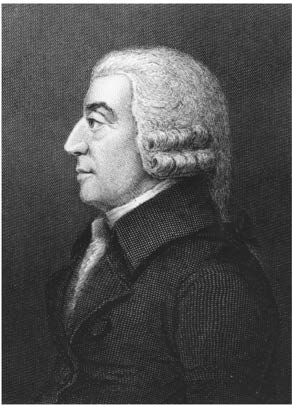

在我看来，大卫·休谟是最伟大的英国哲学家，他于旧历1711年4月26日出生在爱丁堡。他在去世前的四个月即1776年4月完成了告别辞《我的一生》，这是一篇只有五页的自传。在文中，他为自己父母双方的良好家世而自豪。他的父亲约瑟夫·霍姆从事法律职业，在贝里克郡的奈因威尔斯拥有一处庄园，自16世纪以来，这份地产就一直属于他的家族。如休谟所说，他的家族是“霍姆或休谟伯爵家族的一支”（D 233）。在20世纪，这个家族中将会诞生一位保守党首相。他的母亲凯瑟琳是“司法学院院长大卫·福克纳爵士的女儿”，她的一个哥哥继承了贵族头衔。这对夫妇有三个孩子，大卫最小，哥哥约翰生于1709年，姐姐凯瑟琳生于1710年。
1713年，大卫还是婴儿时，父亲约瑟夫去世了。长子继承了财产，大卫每年只有大约50镑的遗产，即使在当时，这点钱也不足以使他经济独立。家里人希望大卫能继承父业成为律师。大卫的母亲没有再婚，在约翰成年之前一直经营着这块地产。他的母亲是个热忱的加尔文派教徒，并按照这种信仰把孩子们抚养大。据说大卫深爱他的母亲、哥哥和姐姐。虽然他在十几岁时拒绝接受加尔文主义和其他各种基督教教派，但这并没有影响他和母亲的关系，这表明他向其隐瞒了此事，或至少是没有表现得很强硬。大卫一生性情温和，无论在公开场合还是私下都不愿与人争论，但他并不缺乏勇气在书中表达自己的信念，无论这些信念是多么非正统。据说他的母亲曾说：“我们的大卫是一个令人愉快的、温厚的火山口，但头脑却异乎寻常地清醒。”是否真有此事我们不得而知，如果是真的，它可能表达了大卫脱离家庭供养、变得经济独立时母亲的一种恼怒之情。
1723年，还不到12岁的大卫与哥哥一起进入爱丁堡大学，在那里度过了三年美好时光。他们没有拿学位，这在当时很常见。他们报名参加的必修课有希腊语、逻辑、形而上学、自然哲学或现在所说的物理学等，还选修了伦理学和数学等课程。虽然这些课程的水平似乎还比较初等，但在这个阶段，休谟可能对牛顿和洛克的重要著作有了一定的了解。对于大学学习，他只说自己“成功地通过了普通教育课程”。
回到奈因威尔斯之后，休谟试图着手研究法律，但很快便放弃了这种尝试，因为他对文学（当时的文学包括历史和哲学）产生了强烈的兴趣。他在自传中写道：“这种热情占据了我的一生，是我身心愉悦的巨大源泉。”这种热情太过强烈，以至于他说：“除了研究哲学和一般学问，我对任何事情都不由得产生一种厌恶。”（D 233）虽然他说自己正在“暗地里如饥似渴地阅读”西塞罗和维吉尔，而不是那些法学家的著作（他的家人还以为他一直在研究这些著作），但他的心思主要放在了哲学上。1729年，“新的思想景致”向年仅18岁的休谟敞开，并将在他第一部也是最著名的著作《人性论》中显示出来。
这一发现所带来的兴奋以及巨大的工作强度损害了休谟的健康。他的不适是由精神压力引起的。此后他按时锻炼身体，辅以充足的饮食，没到两年就从一个“骨瘦如柴的高个子”年轻人变成了他所谓的“体格健壮、充满活力、面色红润、朝气蓬勃”的家伙。但实际上，他仍然患有抑郁，并且伴随着心悸等身体征兆，他经常造访的当地医生无法使他痊愈。他最终决定，至少应暂时放弃研究，以便“更积极地生活”。1734年2月，他离开苏格兰赴布里斯托尔，在那里担任一个糖业公司的职员。他决定离开苏格兰可能还有一个原因：当地有一个女仆在由休谟的叔叔主持的教会法庭上指控休谟是她私生子的父亲。这一指控未被承认，即使在当地也没有损害休谟的名誉。事实上，后来的证据表明，休谟易对女人动情，尽管他一生未婚，性情镇定而宁静，又完全沉浸于理智追求中，根本称不上爱向女子献殷勤。

图1 休谟像，艾伦·拉姆齐作，1754年
休谟在布里斯托尔结交了几位好友，但仅仅四个月，他就认定自己不适合经商。据说休谟被解雇是因为他总是批评其雇主的文学风格（M 90），不论这是否是事实，毫无疑问的是，休谟很高兴能自由地致力于哲学研究。在布里斯托尔逗留期间，为了符合当地的发音，他将其姓氏“霍姆”（Home）改拼为“休谟”（Hume），这是这一时期所产生的最为持久的结果。
既已决定投入《人性论》一书的写作，也许是为了使他那份微薄的私人收入能够更好地维持生活，休谟移居到了法国。在巴黎短暂逗留期间，其苏格兰同乡谢瓦利埃·拉姆齐为他作了一些有益的引荐。此后他在兰斯待了一年，又在安茹的拉弗来什小镇住了两年，这里有一所笛卡尔曾经就读的耶稣会学院。休谟与耶稣会的神父们交上了朋友，并且利用了该学院藏书甚丰的图书馆。到了1737年秋天，休谟完成了《人性论》的大部分内容，遂回到伦敦为其寻找出版商。
事情的发展并不如休谟所愿。一年之后，他才与约翰·努恩成功地签订了《人性论》前两卷即第一卷《论知性》和第二卷《论感情》的出版合同，印数1000册，他的收入则是50英镑和12部合订本。1739年1月，这部著作以不具名的方式出版，定价10先令，总标题为《人性论：将实验推理方法引入道德学科的尝试》。此书的第三卷《论道德》在出版时尚未写成，直到1740年11月才由朗文公司出版，定价4先令。
《人性论》受到的冷遇使休谟大为失望。他说：“再没有什么文学尝试能比我这本书更为不幸了，它一从印刷机中降生就死了，甚至连在热心人当中激起一句怨言的礼遇都没有得到。”（D 233）这样说并不完全准确。虽然休谟在世时努恩版的确没有卖光，但这部著作还是引起了国内外刊物的注意，并且获得了三篇较长评论。麻烦在于，这些评论大多数是怀有敌意的，有时甚至是鄙视性的。休谟认为，这种敌意主要源于对其观点的误解，为了消除这种误解，他在1740年出版了一本不具名的定价为6便士的小册子，并宣称它是“遭到众多反对且被说得异常糟糕的哲学新著《人性论》的摘要，对它作了进一步解释说明”。但它出版时使用的标题并无攻击性：《一本哲学新著〈人性论〉的摘要，对该书的主要论点作了进一步解释说明》。这本小册子逐渐被人遗忘，直到20世纪30年代末梅纳德·凯恩斯发现和确认了它的一个副本，并与皮耶罗·斯拉法为其写了引言，且以《1740年〈人性论〉摘要：大卫·休谟的一本迄今鲜为人知的小册子》为题将其出版时才被人记起。此书引起了人们对休谟因果关系理论的极大关注，该理论的确是《人性论》的特色，《人性论》后来也因为这一理论而变得极为著名。
休谟渐渐认为自己要为《人性论》一书失败负责，因为它在叙述上存在缺陷，后来则倾向于与之脱离关系。这种迹象最初可见于他两卷本的《道德和政治论文集》第一卷的序言。这两卷分别于1741年和1742年出版，且仍未具名。在这篇序言中，他被称为一位“新作者”。这部文集共27篇，是由安德鲁·金凯德在爱丁堡出版的，各篇严肃程度各不相同，论题内容广泛，包括评论、风度、哲学和政治等。它们获得了好评，尤其是像《出版自由》、《政府的首要原则》等主题的政治随笔。《罗伯特·沃波尔爵士的品格》这篇文章引起了特殊的兴趣，这位政治家失势后，休谟觉得自己对他的评价过于严厉了。因此，休谟无疑未在这部著作后来的版本中重印这篇文章。他还删去了书中《爱与婚姻》、《无耻与谦逊》等几篇分量不太足的文章。
这些文章的出版不仅给休谟带来了大约200镑的收入，而且使他有胆量申请爱丁堡大学的伦理学和精神哲学教授职位。1744年，休谟的朋友爱丁堡市长约翰·库茨建议他申请这一职位。在过去的两年里，当时占据该职位的亚历山大·普林格尔一直在国外做军医，且被任命为佛兰德斯军队的医务长，因此仍然担任爱丁堡大学教授似乎不太合适。当时在市议会中没有人公开反对休谟接任，但不幸的是，普林格尔直到库茨不再担任市长才辞职，此时休谟曾经得罪过的那些狂热分子已经有了时间来聚集力量。在1745年休谟匿名出版的《一位绅士致其爱丁堡朋友的一封信》这本小册子中，他否认自己曾经拒绝接受（而不是阐释）“凡开始存在的事物必有原因”这样一个命题，也否认其《人性论》的论点会以任何其他方式导致无神论，但并未平息那些人的怒气。同年，该职位被授予了休谟的朋友和导师、格拉斯哥大学道德哲学教授弗朗西斯·哈齐森，哈齐森拒绝后，市议会决定提拔一个一直在代普林格尔工作的讲师担任这一职务。
由于仍然缺乏那项任命所能带来的财务保障，休谟接受了一笔每年300镑的薪水，担任安南达尔侯爵的家庭教师。安南达尔是个古怪的年轻贵族，不久便被诊断为精神错乱，住在距离伦敦不远的圣阿尔班附近。尽管安南达尔侯爵行为古怪，而且家中有一名重要成员对休谟抱有敌意，但休谟对自己的职位非常满意，哪怕降低薪水都可以。他这样做无疑是因为能有空闲时间从事写作。正是在这段时间里，他开始撰写《关于人类理解的哲学文集》，后更名为《人类理解研究》，旨在取代《人性论》的第一卷。于1748年出版的《道德和政治随笔三篇》很可能也是在这段时间写成的。

图2 休谟《〈人性论〉摘要》的扉页，他试图在书中纠正对《人性论》观点的误解
事实上，《人类理解研究》要比《人性论》写得好得多，其区别更多在于侧重点而不是论点。在《人类理解研究》中，休谟凸显了因果关系这一中心议题，较少受到现在所谓的心理学的拖累。《人性论》中也有一些章节，比如论“时间”“空间”的章节，在《人类理解研究》中没有对应。另一方面，《人类理解研究》增加了“论奇迹”一章，休谟出于谨慎把它从《人性论》中删掉了。这一章的中心论点是：“任何证词都不足以确立一个奇迹，除非这种证词的谬误要比它所要确立的事实更加神奇。”（E 115—116）这一论点以及书中所蕴含的反对偶像崇拜的思想使休谟在同代人当中声名鹊起，这是他的纯哲学著作中其他任何内容所无法比拟的。
1748年2月问世的《道德和政治随笔三篇》是休谟第一次冠以真实姓名的著作，此后他将延续这一做法。这几篇随笔源于年轻的觊觎王位者的反叛。在这些随笔发表之前，休谟说他们“一个是反对原始契约论的辉格党体系；另一个是反对被动服从的托利党体系；第三个则是新教继承者，我希望人们在那种继承确立之前认真考虑一下自己应该坚持哪一家的观点，权衡各方的利弊”。事实上，关于新教继承的随笔直到1752年才发表，在1748年出版的书中则被代之以一篇名为《民族特性》的随笔。
休谟绝非英王詹姆斯二世的追随者，但却写了一本小册子来捍卫他的朋友斯图尔特市长，这位市长曾因把爱丁堡拱手交给反叛者而在1747年受到指控。不过由于印刷者的胆怯，这本小册子直到斯图尔特被无罪开释之后才得以出版。
虽然休谟甘愿就其家庭教师工作达成妥协，但并未奏效。1746年4月，他被解雇了，而且有四分之一的薪水没拿到，直到大约15年后，这笔钱大概才付清。一年前，休谟的母亲去世，对此休谟极为悲伤。他本想回到失去母亲的苏格兰，但因远房亲戚圣克莱尔将军所提供的一个职位而作罢。这位将军曾奉命率军队远征加拿大，以帮助英国殖民者驱逐法国人，他要休谟担任自己的秘书。正当远征军在朴次茅斯港等待适宜天气时，休谟从秘书晋升为圣克莱尔所领导的全军的军法官。由于风向不好，远征队改道去了布列塔尼，在那里没有攻下洛里昂城。正当法国人决定投降时，他们放弃了包围，几乎一无所获地回到了英国。圣克莱尔将军的命运似乎比应受处罚更为不幸，面对伏尔泰的嘲笑，休谟后来曾撰文为将军在远征中的行为进行辩护。休谟不得不再次等待多年才从政府那里拿到他应得的那份军法官的薪水。
远征军解散后，休谟回到奈因威尔斯小住。但在1747年初，他受将军之邀回到伦敦，担任这位身为“驻维也纳和都灵宫廷的军事使节”的将军的副官。休谟身着一套可能并不合适的军官制服。据一位年轻目击者说：“这个胖家伙会让人想起吃甲鱼的市政官，而不是优雅的哲学家。”（M 213—214）同样是这名年轻人，虽然后来自豪于与休谟的熟识，但评论过休谟丰富的心灵世界与茫然若失的面容之间的不一致，嘲笑他讲法语或英语时带有那种“非常浓重且极为粗俗的苏格兰口音”。
休谟在都灵一直待到1748年底，因此当奠定其文学声誉的《道德和政治随笔三篇》、《人类理解研究》的第一卷以及再版的《道德和政治论文集》出版时并不在英格兰。法国大文豪孟德斯鸠对这些随笔非常欣赏，遂将自己《论法的精神》一书赠予休谟，且在其生命的最后七年中一直与休谟保持定期通信。
如果我们相信休谟自传中的说法，那么休谟本人乃是渐渐才意识到形势正在变得对自己有利的。他在自传中谈到自己返回英格兰后，看到《人类理解研究》和再版的《道德和政治论文集》都没有大获成功，顿感颜面尽失。不过，这并未使他气馁，反倒激起了他的著述志向。回到奈因威尔斯后，他于1751年完成了《道德原则研究》一书，旨在取代《人性论》的第三卷。休谟自认为“这是我所有历史、哲学或文学作品中的最佳著作”（D 236）。次年他又发表了《政治论》。在这一时期，他也开始撰写《自然宗教对话录》，并且潜心研究，为撰写《英国史》作准备。与此同时，他的著作开始招来批评。用他自己的话说，“牧师们、主教们一年中有两三次答复”（D 235），但休谟的应对方案始终是“一概不回应”。
虽然和休谟的其他著作一样，《政治论》也没有逃脱在1761年被列入罗马天主教《禁书目录》的命运，但这种敌意大体上并没有延伸至《政治论》。休谟说这部著作是“我唯一一部甫一出版即获成功的作品”。该书最初包括12篇随笔，其中只有4篇是严格政治性的。1篇涉及古代世界和现代世界的相对人口，其余7篇则讨论了我们现在所谓的经济学。休谟是自由贸易的坚定支持者，他的随笔在某种程度上预示了他年轻的朋友亚当·斯密在其名著《国富论》中提出的理论。休谟在去世前几个月怀着钦佩之情读了《国富论》第一卷。
1751年，约翰·霍姆结婚了，大卫和他的姐姐在爱丁堡建了住宅，随着境况的改善，又搬到了更为舒适的住处。除了稿费收入，休谟在维也纳和都灵担任的职位使他“握有近1000镑”。此外，除了他的50镑收入，他的姐姐还有30镑的私人收入。虽然他谈到了自己的节俭，但其社交生活似乎很活跃；他经常受到各色朋友的款待，包括一些温和的牧师，他自己也会加以回报。然而，倘若他能谋得格拉斯哥大学的逻辑学教席，他很可能会搬到格拉斯哥。这一年，该席位因亚当·斯密继任了道德哲学席位而空了出来。尽管休谟得到了亚当·斯密以及其他一些教授的支持，但那些狂热分子的反对再次阻止了他的当选。
休谟在爱丁堡担任了苏格兰律师会的图书馆员一职，这对他未能获得教席多少有些安慰。年薪仅40镑，1754年后，休谟拒领这份薪水，因为图书馆馆长以书的内容下流为由拒绝休谟借阅拉封丹的《故事集》等三本书的要求。休谟直到1757年才辞职，在此之前，他采用了一种折衷的办法，即把这笔钱给他的朋友、盲诗人布莱克劳克。这个职位对休谟的好处在于，图书馆藏书极为丰富，他在撰写《英国史》时可以阅读所需的书籍。在把图书馆员的职位交给他的朋友、哲学家亚当·弗格森之后，他似乎仍能利用图书馆的资源。

图3 爱丁堡的国会方庭和法院。国会大厦内部的苏格兰律师会图书馆，休谟于1752至1757年在这里任职
休谟六卷本的《英国史》没有按照通常顺序出版。它从斯图亚特王朝开始，第一卷包括詹姆斯一世及查理一世的统治，第二卷讲到詹姆斯二世垮台，这两卷分别于1754年和1756年出版。接下来的两卷于1759年出版，写的是都铎王朝。全书以1762年出版的最后两卷而宣告完成，这两卷从凯撒入侵写到亨利七世登基，涵盖多个世纪。第一卷一经出版即告失败，部分原因在于，它试图在国王与国会的冲突中保持公平，结果既惹怒了辉格党，又没能让托利党满意；还有一部分原因似乎在于，伦敦的书商们合谋反对休谟所委托的爱丁堡商行。最终，这家商行把版权明智地转给了休谟通常合作的出版商安德鲁·米勒，后者后来出版了休谟的其余几卷著作。这几卷著作使休谟在评论上和金钱上都大获成功。休谟售卖各卷版权总共得到超过3000镑的收入，当时的人渐渐把这部著作看成一项杰出的成就，以至于休谟作为历史学家要比作为哲学家更受尊敬。伏尔泰甚至说：“《英国史》的声望没法再高了，它也许是迄今为止用任何语言写成的历史中最好的一部。”（M 318）很久以后，利顿·斯特雷奇在其《人物小传》的一篇关于休谟的随笔中评论说，休谟的书“卓越而厚重，应归入哲学研究，而不是历史叙述”。这一评价较为中肯，哪怕仅仅出于休谟的机智和优美的风格，《英国史》也仍然值得一读。
在《英国史》出版期间，休谟又于1757年出版了另一本文集《论文四篇》。其中最重要的一篇是《宗教的自然史》；第二篇《论情感》则是《人性论》第二卷的浓缩和修正；第三、第四篇分别是《论悲剧》和《论品味的标准》。第四篇论文原打算讨论几何学和自然哲学，但因数学家朋友斯坦霍普勋爵劝告才用《论品味的标准》一文取而代之。放弃那篇数学论文后，休谟原打算补充《论自杀》和《论灵魂不朽》这两篇论文，从而使论文总数增至五篇，但出版商米勒担心这些文章会被视为对宗教的进一步冒犯，休谟只好将其撤回。虽然这两篇论文手稿的副本曾私下流传，1777年和1783年未经作者授权即出版，但它们从未被包括进休谟授权的著作版本中，后来可见于1875年格林和格罗斯版休谟著作集的第二卷“未发表论文”中。
1758年和1761年，休谟两次到伦敦照看其《英国史》其余几卷的排印。第一次去时，他在伦敦待了一年多，很想在那里定居下来，最后还是认定自己更喜欢爱丁堡的氛围而放弃了这个想法。在伦敦期间，休谟受到上流社会和文坛的热情款待。据鲍斯韦尔所说，约翰逊博士说只要休谟加入某个群体，他将立即离开。但约翰逊博士对休谟的“憎恶”并未阻止他们不久以后成为皇家牧师晚宴的座上宾，而且没有发生公开冲突。特别是，休谟利用他对米勒的影响而使他的朋友威廉·罗伯逊牧师所著《苏格兰史》得以出版，甚至不惜自己著作的利益可能受损而去促销罗伯逊的书。然而，当罗伯逊被任命为苏格兰王家史料编纂者时，他却略为不快，因为他本人也很想担任这一职位。
1763年，“七年战争”结束时，贺拉斯·沃波尔的一个表亲赫特福德伯爵出任英国驻法国宫廷大使。由于不满意官方委任的秘书，他决定雇佣一个私人秘书，并选定了从未谋面的休谟。由于他本人非常虔诚，这一选择令人惊讶，但有人极力向他推荐休谟，说休谟在法国声名赫赫。起初休谟拒绝了这份工作，但在再次邀请之下接受了。在伦敦见到赫特福德夫妇时，休谟很喜欢他们，并于1763年10月陪他们去了巴黎。
一到巴黎，休谟就取得了最为非凡的社会成功。正如利顿·斯特雷奇所说：“王公贵族们奉承他，风雅的女士们崇拜他，哲学家们把他奉若神明。”在这些哲学家当中，与他过从甚密的朋友有百科全书派的狄德罗和达朗贝尔，还有唯物主义者霍尔巴赫男爵。有一个关于休谟在霍尔巴赫家吃饭的故事说，休谟自称从未遇到过无神论者，而霍尔巴赫告诉他，在座的人当中有15位是无神论者，其余3位尚未下定决心。在那些风雅的女士中，布夫莱尔伯爵夫人是其主要崇拜者，她在1761年给休谟写信与之相识。她比休谟小14岁，是孔蒂亲王的情妇，其丈夫去世后曾希望与亲王结婚，但没能如愿。虽然她从未忘记这个首要目标，但她似乎曾一度爱上了休谟，而他们的通信更有力地证明，休谟也爱上了她。虽然1766年1月休谟离开巴黎后他们再未见面，但是在此后的10年里他们一直保持着通信联系。休谟在去世前不到一周写给她的最后一封信中对孔蒂亲王的逝世表示了同情，并说“我自己也看到死亡在步步逼近，我没有焦虑，没有悔恨，最后一次向你致以深挚的感情和问候”。

图4 伏尔泰在晚宴上，参加晚宴的还有达朗贝尔、马蒙泰尔、狄德罗、拉阿尔普、孔多塞、莫里和亚当神父。1763年被任命为英国大使秘书之后在巴黎逗留期间，休谟“被哲学家们奉若神明”，与百科全书派的狄德罗和达朗贝尔过从甚密
休谟离开巴黎时，卢梭与他同行。此前卢梭一直住在瑞士，但其异端的宗教观点使之在当地成为众矢之的，在法国也不能不受干扰地生活。他们共同的朋友韦尔德兰夫人劝休谟保护卢梭，但也有哲学家警告说不能信任卢梭。卢梭的那位教育程度很低的“女管家”特莱斯·勒瓦塞尔也在她沿路勾引的鲍斯韦尔的护送下与之同行。初到英国时，一切顺利，休谟与卢梭彼此欣赏。在寻找住处的问题上出现了些麻烦，卢梭没有到原先答应住的地方去住，而是最终同意住在富有的乡绅理查德·戴文波特提供的一个位于斯塔福德郡的只收名义房租的住处。休谟还为他申请到了国王乔治三世给予的200镑养老金。但没过多久，卢梭的偏执狂病发作了。贺拉斯·沃波尔曾写过一篇针对卢梭的讽刺文章，而卢梭却认为这是休谟写的。英国新闻界有一些关于他的笑话，特莱斯从中进行了挑拨。卢梭确信这是休谟与法国哲学家合谋与之作对。他拒领国王的养老金，又开始怀疑戴文波特先生，还写了言辞激烈的信给他在法国的朋友、英文报纸和休谟本人。休谟试图让卢梭相信自己的无辜但未果，此时他开始担心自己的声誉。他将整个事件的来龙去脉写出来寄给达朗贝尔，说如果认为合适可将其发表。达朗贝尔的确发表了它，同时还发表了作为主要证据的信件。数月之后，达朗贝尔这本小册子的英译本也出版了。卢梭在英国一直待到1767年春，然后与戴文波特不辞而别，带着特莱斯匆匆回到法国。对于休谟，卢梭的所作所为无疑十分恶劣，但休谟的一些朋友认为他应当体谅卢梭的偏执狂，这样要比公开争吵更有尊严一些。

图5 苏格兰政治经济学家和哲学家亚当·斯密（1723—1790），他说：“总之，无论在休谟生前还是死后，我始终认为，他在人的天性弱点所允许的范围内已经近乎一个全智全德之人。”据说休谟曾经在临终的卧榻上读过亚当·斯密的《国富论》
1765年，赫特福德伯爵被任命为爱尔兰的陆军中尉，在启程之前等待其继任者到达的几个月里，休谟担任巴黎代办，并且展示出外交才能。他谢绝了赫特福德让他去爱尔兰的邀请，却在1767年应赫特福德的弟弟、国务大臣康威将军之邀任副大臣，负责北方部的工作。此后两年，他在这个职位上出色地履行了自己的使命。
1769年，休谟回到爱丁堡时已经是一个年收入1000镑的“富人”了。他在可由圣安德鲁广场进入的一条街上的“新城”中为自己建了一座房子。后来为了纪念他，这条街渐渐被称为“圣大卫街”。休谟继续积极从事社交活动，不顾对其哲学的大量攻击，专心致志地修订《自然宗教对话录》。这本书是其遗著，可能是他的侄子于1779年出版的。1775年春，用他自己的话说，“我患了肠道疾病，起初我没有担心，后来开始忧虑时，此病已变得致命而无法治愈”（D 239）。他几乎没有感到疼痛，“精神一刻也没有消沉”。鲍斯韦尔问休谟是如何面对死亡的，休谟向他保证，自己对此看得很平淡。约翰逊博士则坚称休谟在撒谎。1776年8月25日，死神终于降临在休谟头上。
休谟的一生基本上印证了他对自己的描述：“这是一个性情温和，能够自制，坦诚而友好，愉快而幽默，能够依附但不会产生仇恨，各方面感情都十分适度的人。”（D 239）亚当·斯密在其朋友的讣告结尾所作的描述无疑是真挚的：“总之，无论在休谟生前还是死后，我始终认为，他在人的天性弱点所允许的范围内已经近乎一个全智全德之人。”